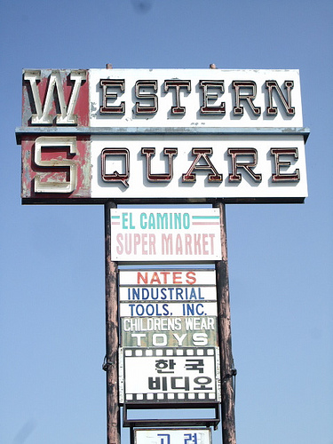

༡༨ནི་རང་བྱུང་གི་གྲངས་ཞིག་སྟེ་༡༧པའི་རྗེས་མ་དང་༡༩པའི་སྔོན་དུ་ཡིན
༡༧༨༣ལོ་ནི་ཀེ་ལུའོ་ཀེ་ལི་ཡའི་ལོ་ཐོའི་ནང་བཀོལ་སྤྱོད་བྱས་པའི་ལོ་ཞིག་ཡིན
1999ལོར་ཁོ་རང་ཟི་ཁྲོན་དར་མདོ་ལས་བྱེད་སློབ་གྲྭ་ནས་སློབ་མཐར་ཕྱིན་རྗེས་ཟི་ཁྲོན་རོལ་མོ་
འདི་དོན་ལ་ཡོད་པའི་སྒྲུབ་བྱེད་ཏག་ཏག་མི་འདུག་ལགས
རིང་ལུགས་ཀྱི་བསམ་བློས་བརྒྱན་ཡོད་དེ དེ་ལས་མིའི་
༡༨ནི་རང་བྱུང་གི་གྲངས་ཞིག་སྟེ་༡༧པའི་རྗེས་མ་དང་༡༩པའི་སྔོན་དུ་ཡིན
འདི་དོན་ལ་ཡོད་པའི་སྒྲུབ་བྱེད་ཏག་ཏག་མི་འདུག་ལགས
ནུབ་ཕྱོགས་འཕགས་ཡུལ་དུ་བསྐྱོད་པའི་སྒྲུང་
གལ་ཆེ་བས་འདིར་བཀོད་ཐབས་ངལ་བ་བྱེད་རིན་མ་མཐོང་
༡༩ནི་རང་བྱུང་གི་གྲངས་ཞིག་སྟེ་༡༨པའི་རྗེས་མ་དང་༢༠པའི་སྔོན་དུ་ཡིན
ཀན་ལྷོ་བོད་རིགས་རང་སྐྱོང་ཁུལ
ལ་ཕྱིར་རྟོག་བྱས་ཚེ གྷི་རི་སིའི་ལོ་རྒྱུས་དེ་གནའ་བོའི་གྷི་རིའི་སིའི་ཤེས་
ཀེ་རི་སི
ཀ་ན་ནི་ཨ་ཧྥེ་རི་ཁའི་རྒྱལ་ཁབ་ཞིག་རེད དེའི་རྒྱལ་ས་ནི་ཨ་ཁ་ར་རེད
ཀེ་རི་སི
སོགས་བོད་རིགས་རྫོང་ཁག་མང་བོས་གྲུབ་པའི་བོད་
༡༨༨༢ལོ
༡༨༨༢ལོ་ནི་ཀེ་ལུའོ་ཀེ་ལི་ཡའི་ལོ་ཐོའི་ནང་བཀོལ་སྤྱོད་བྱས་པའི་ལོ་ཞིག་ཡིན
ཉི་ཡ་དང་དང་མ་སི་དོ་ཉི་ཡ པུར་ག་རི་ཡ་བཅས་རྒྱལ་
ཀུན་བཟང་ལྷ་མོ
བརྒྱུད་ཆོས་ལུགས་ལ་ཀརྨ་བཀའ་བརྒྱུད་ཟེར མིང་
ཀན་ལྷོ་བོད་རིགས་
འདི་དོན་ལ་ཡོད་པའི་སྒྲུབ་བྱེད་ཏག་ཏག་མི་འདུག་ལགས
ཀུན་དགའ
ནས་ངག་བརྒྱུད་དེ་རྒྱུན་འཛིན་བྱས དེ་ལྟ་བུའི་
ཀའོ་ཆིའུ
ཀྲུང་གོའི་རིག་གནས་ཀྱི་དེབ་གཙོ་གྲས་ཆེན་པོ་
ཀུན་བཟང་ལྷ་མོ
འགྲན་ཚོགས་དེ་ཞི་བདེ་དང་མཛའ་མཐུན་གྱི་མཚོན་
ནུབ་ཕྱོགས་སུ་
བའི་མཁས་པ་ཆེན་པོ་དེ་ཡང་གདན་ས་འདིའི་སྤྲུལ་
ཀས་ཏར་མན
ལོ་རྒྱུས ནུབ་ཕྱོགས་སུ་བསྐྱོད་པའི་རྣམ་ཐར་ཞེས་པ་དེ་ནི་སྤྱི་ལོའི་དུས་རབས་བདུན་པའི་
༡༨༨༢ལོ
༡༨༨༢ལོ་ནི་ཀེ་ལུའོ་ཀེ་ལི་ཡའི་ལོ་ཐོའི་ནང་བཀོལ་སྤྱོད་བྱས་པའི་ལོ་ཞིག་ཡིན